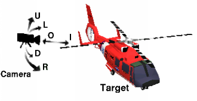
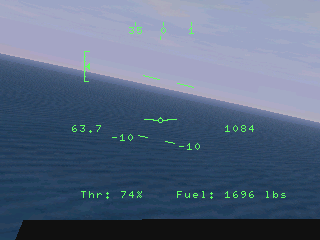

Using The Camera
To change camera views, that is what the camera is focused on,
press the function keys as described below:
F2 Cockpit
F3 Spot
F4 Tower/Director/Audience
F5 Hoist
M Map
For a complete list of keyboard keys see
Keyboard Keys List

In all the views listed above, you can use the joystick's hat
to pan around and the zoom in and zoom out buttons to
adjust the zoom (or distance). Pressing
BACKSPACE will normalize the view (return the camera
direction to the default direction/position/zoom for the current view).
To control the camera with the keyboard instead of the joystick use
SHIFT + CURSOR instead of the hat and PLUS and
MINUS instead of the zoom buttons.
Cockpit View
In the cockpit view the hat is used to look around
inside the cockpit. The zoom buttons have no affect. Holding
down SHIFT while using the hat will turn the camera
to 90 degree angles relative to the aircraft (not 90 degree
increments).
Spot View
In the spot view the hat is used to look around the object
it is currently focused on. When you press F3 for the
first time it is focused on your aircraft, for each additional press
the camera will focus on the "next" object (or previous object if you
press SHIFT + F3). The zoom buttons will move the camera
closer or farther away from the object, holding the SHIFT
key while zooming will cause the zoom to increment at a faster rate.
Tower/Director/Audience View
In the tower/director/audience view the camera does not move
and stays fixed at its location. The camera is initially set each time
you press F4 to position it in front of the object and
close to its movement path for a "fly by view". You can use the hat
to move the camera up and down or left and right relative to the object
it is focused on. The zoom buttons will move the camera closer or
farther away from the object.
Hoist View
The hoist view is similar to the spot view the only
difference is that the camera is focused at the end of the rope. This
view is idea for situations when you are manuvering the aircraft to pick
someone up.
Map View
The map view displays the map of the entire scenery, it is
explained further below.
[
Cockpit Head up Display (HUD)

The cockpit view displays the view inside the cockpit, when the
camera is pointed forwards you can see the Head Up Display (HUD) (as
shown on the right.
The HUD displays the following:
- Heading - Shown as a horizontal array of ticks with numbers
near the top, the units are in * 10 degrees.
- Attitude - Shown as an array of ticks leveled with the
horizon, the ticks are spaced 10 degrees.
- Speed - Shown in nautical miles per hour on the left.
- Altitude - Shown in feet above sea level on the right (note
that this differs from the Altitude shown on the
outside view.
- Fuel - Shown in pounds on the lower right corner.
- Throttle/Collective - Shown in percent on the lower left
corner.
- Elevator/Pitch Trim - Shown on the upper left corner as a
vertical array of ticks and an arrow.
If a Waypoint is selected, then the direction to that waypoint
will be indicated on the Heading ticks as an arrow and the
distance to the Waypoint (in miles) will be indicated on the
upper right.
[
Map

The map view displays a birds eye view of your surrounding
area.
You can use the hat to pan around and the zoom buttons to increase
or decrease the area (holding SHIFT while using
the hat or zoom buttons speeds up the movement).
Pressing BACKSPACE will jump to your current location on
the map.
The displays shown on the outside view are also displayed on the
map view so you can monitor your aircraft's situation. In
addition the waypoint lines will be displayed.
Heliport, runway, and other significant markings are displayed as
symbols.
[